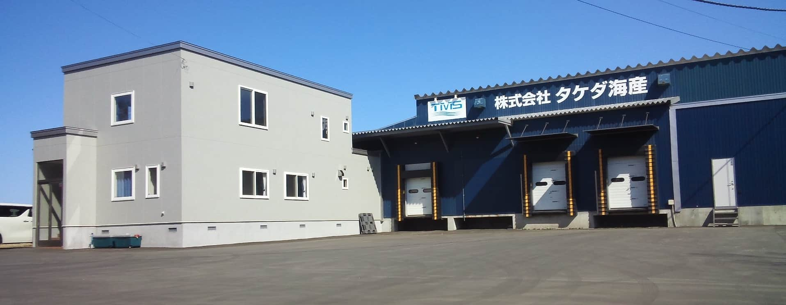

企業概要
企業理念
一、私たちは、食品に関わる法令・規制要求事項、お客様が求める食品安全の要求事項を順守するとともにお取引先様とのコミュニケーションを図り、同様の法令・規制要求事項を求めてまいります。
一、私たちは、謙虚さを常に持って、お客様の基準で物事を考え、お客様にご満足いただける品質かつ安心安全な製品を提供致してまいります。
一、私たちは、すべてのお客様から「信頼」と「満足」が得られる企業であるために、商品開発・工程管理に積極的に取り組み、安全・安心な商品をお届けします。
一、私たちは、原料調達から製造・物流・販売に携わるすべての社員に食品安全方針を周知徹底させ、全社員参画で食品安全の実施、維持する為、人財育成に努めます。
一、５Ｓ（整理・整頓・清掃・清潔・躾(教育)）を徹底し、原料入荷・製造・出荷のすべての工程において、衛生的で効率的な作業環境を維持します。
一、私たちは、HACCPに基づく食品安全および衛生管理システムを構築し、継続的な改善に取り組み、2021年のＪＦＳ-Ｂ規格認証を目指します。
会社概要
| 会社名 | 株式会社 タケダ水産 |
|---|---|
| 所在地 | 〒061-3241 北海道石狩市新港西2丁目765番 地8 |
| TEL/FAX | TEL : 0133-76-6692 FAX : 0133-76-6693 |
| 代表取締役 | 武田 肇 |
| 設立 | 2008年（平成20年）3月 |
| 資本金 | 500万円 |
| 事業内容 | ◯水産物の加工及び販売 ◯魚介類、甲殻類の販売 ◯生鮮食品・冷凍食品の販売 |
| 取扱商品 | 蟹・海老・ホタテ・いくら ウニ・その他海産物全般 |
| 従業員数 | 20名 |
| 取引銀行 | ◯北海道銀行 ◯北陸銀行 ◯北洋銀行 |
沿革
| 2008年3月 | 株式会社タケダ海産 設立。 |
|---|---|
| 2009年10月 | 北海道小樽市から現在地 （北海道石狩市）に移転。 加工食品工場及び冷凍冷蔵庫購入。 |
| 2019年08月 | 事務所棟新築、及び、工場 全面改修。 急速冷凍機（3Dフリーザー） 2機導入。 |